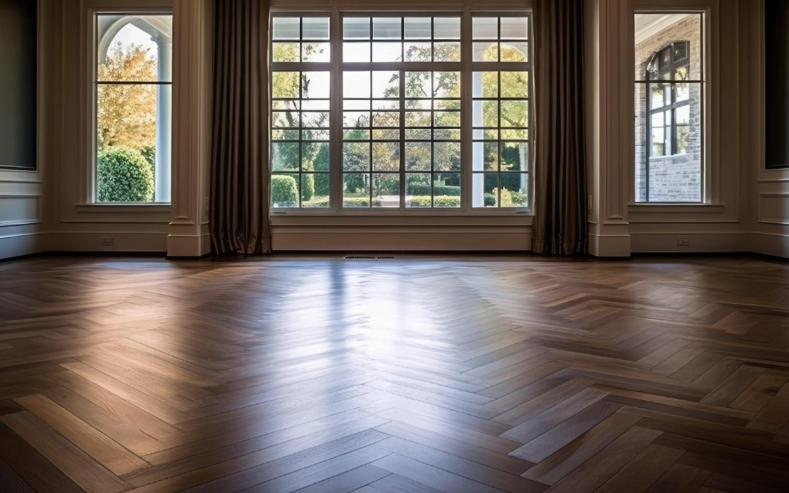
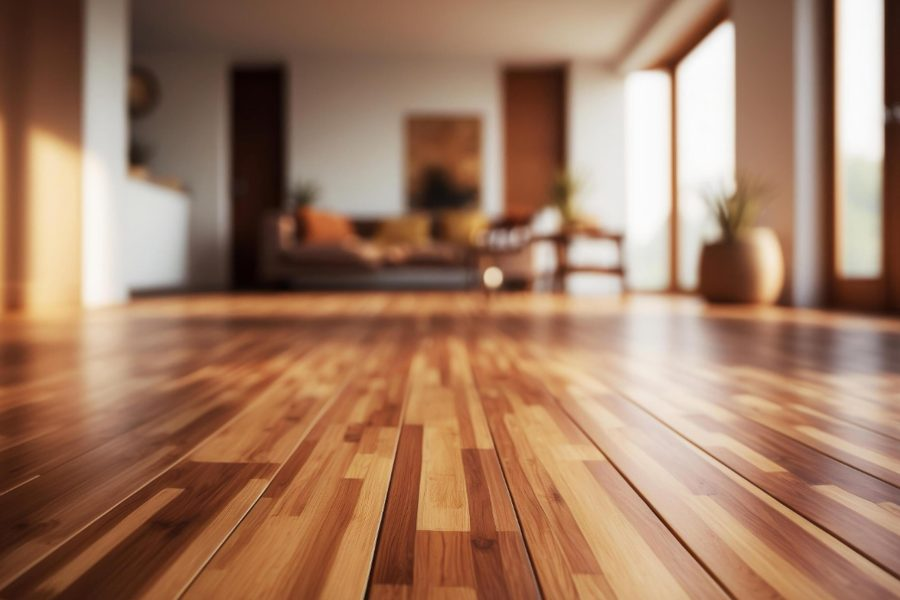

Real wood. Timeless warmth.
| Made of | Real wood, solid or engineered |
|---|---|
| Water | Not water-friendly; keep out of wet areas |
| Durability | Long-lasting; can scratch and dent |
| Refinishable | Yes (solid hardwood) |
| Typical cost level | $$$ to $$$$ |
Hardwood is real wood from top to bottom, and nothing else looks or feels quite like it. It adds lasting value to a home, and solid hardwood can be sanded and refinished to look new again. Engineered hardwood gives you the same real-wood surface with added stability.


Hardwood is typically nailed, stapled, or glued over a clean, dry, level subfloor. Wood should adjust to your home’s humidity before installation.
Sweep or vacuum regularly, wipe spills right away, and clean with a product made for wood floors. Skip steam mops and soaking-wet mopping. Felt pads under furniture help prevent scratches.
Solid hardwood is one piece of wood and can be refinished more times. Engineered has a real wood top layer over a layered core and handles humidity changes better. We can help you choose for your space.
Solid hardwood can be sanded and refinished several times, which is a big reason it lasts for decades. Engineered hardwood can be refinished depending on how thick its wood layer is.
It holds up well with normal wear, but it can scratch and dent. Harder species, matte finishes, and area rugs in busy spots all help.
Call or email to talk through your project and get a quote.